Entity Code First Migrations
iborn.net
Skopje 2016
Code-First Approach
- Code-First approach can be related to the domain driven design of an application.
- Enables focusing on generation of domain classes first and generating the database according to our requirements.
- Automates the addition of new tables, columns and execution of Seed methods that populate the tables with the initial data.
Building the Domain Model
- Configure Domain Classes in Code-First:
- DbContext Class - The primary class responsible for interacting with data as objects.
- DataAnnotations
- Fluent API - Enables using property conventions, EntityTypeConfiguration for each class, defining relationship between the objects etc.
DbContext class
public class NetworkCompanyContext : IdentityDbContext<ApplicationUser, Role, int, UserLogin, UserRole, UserClaim>
{
public NetworkCompanyContext(): base("NetworkCompanyConnection")
{
Database.Log = WriteFile.WriteSQL;
Database.SetInitializer<NetworkCompanyContext>(null);
}
public static NetworkCompanyContext Create()
{
return new NetworkCompanyContext();
}
...
public DbSet<Claim> Claims { get; set; }
...
}
OnModelCreating
protected override void OnModelCreating(DbModelBuilder modelBuilder)
{
modelBuilder.Conventions.Remove<OneToManyCascadeDeleteConvention>();
modelBuilder.Conventions.Remove<ManyToManyCascadeDeleteConvention>();
modelBuilder.Properties<int>().Where(x => x.Name == "Id").Configure(x => x.IsKey());
modelBuilder.Properties<long>().Where(x => x.Name == "Id").Configure(x => x.IsKey());
modelBuilder.Properties<decimal>().Configure(x => x.HasPrecision(18, 6));
...
base.OnModelCreating(modelBuilder);
modelBuilder.Entity<ApplicationUser>().ToTable("Users");
...
modelBuilder.Entity<ApplicationUser>().Property(x => x.FullName).HasMaxLength(200).IsRequired();
...
modelBuilder.Configurations.Add(new ClaimConfiguration());
...
}
DataAnnotations or Fluent API
DataAnnotations
[Required(ErrorMessageResourceName = "RequiredField", ErrorMessageResourceType = typeof(StringResources.StringResources))]
[StringLength(3000, ErrorMessageResourceName = "StringLength", ErrorMessageResourceType = typeof(StringResources.StringResources))]
public string Info { get; set; }
Fluent API
public class ClaimConfiguration : EntityTypeConfiguration<Claim>
{
public ClaimConfiguration()
{
Property(x => x.Info).HasMaxLength(3000).IsRequired();
...
}
}
Database Initialization
- CreateDatabaseIfNotExists
- DropCreateDatabaseIfModelChanges
- DropCreateDatabaseAlways
- MigrateDatabaseToLatestVersion
- Custom DB initializer
Database.SetInitializer<NetworkCompanyContext>(null);
Begin with migrations
- Issues with the existing initialization strategies prior Entity Framework 4.3
- Introducing MigrateDatabaseToLatestVersion
- Two kinds of Migration:
- Automated Migration
- Code based Migration
Automatic migrations
- Migrations can run automatically, meaning that model changes will be discovered and migrations corresponding to changes will be created and executed on the database. All of this happens at run time during database initialization. Automatic migrations are handy for simple apps, but you have very little control over them.
- The problem is that automatic migrations are limited and don't handle a number of operations - property/column renames, moving data to another table, etc.
Configuration class
public class Configuration : DbMigrationsConfiguration<NetworkCompany.DataAccessLayer.NetworkCompanyContext>
{
protected static readonly log4net.ILog log = log4net.LogManager.GetLogger(typeof(Configuration));
public Configuration()
{
AutomaticMigrationsEnabled = false;
//AutomaticMigrationDataLossAllowed = false;
}
protected override void Seed(NetworkCompany.DataAccessLayer.NetworkCompanyContext context)
{
....
}
}
Important commands for code-based migrations
- Enable-Migrations
- Add-Migration [MigrationName] [-IgnoreChanges]
- Update-Database [–TargetMigration: MigrationName] [-Script] [-Verbose] [-Force]
Workflow
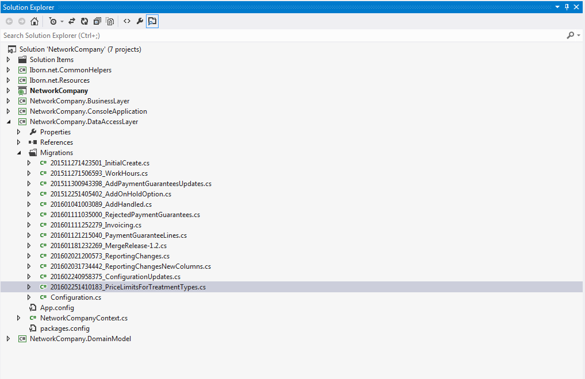
Workflow
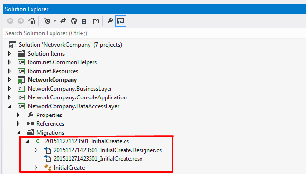
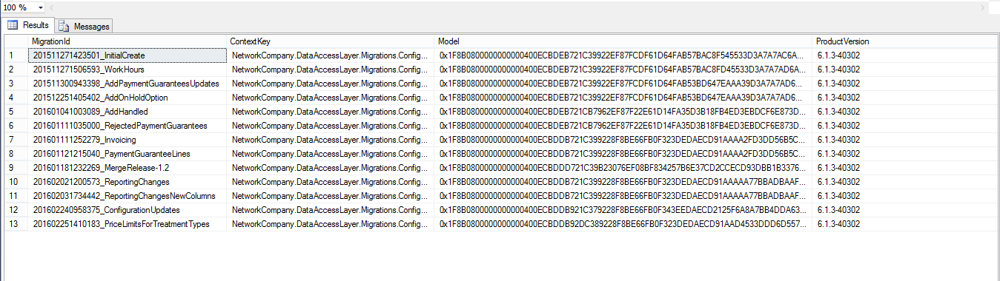
AddMigration command
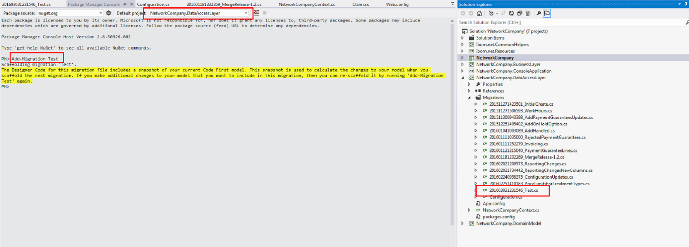
Update-Database
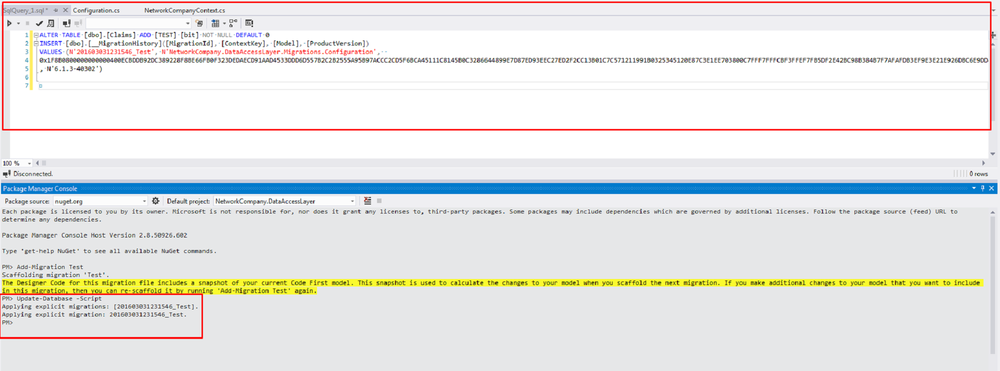
Update-Database
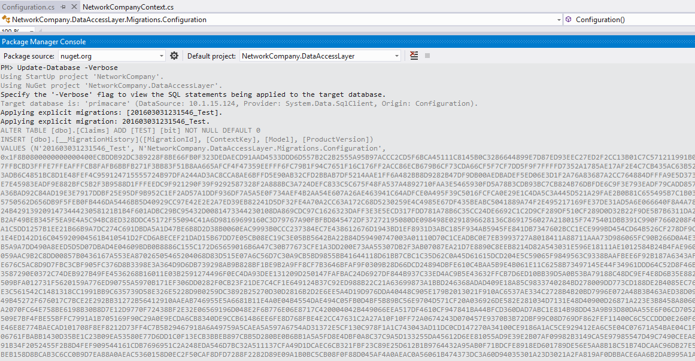
Update-Database
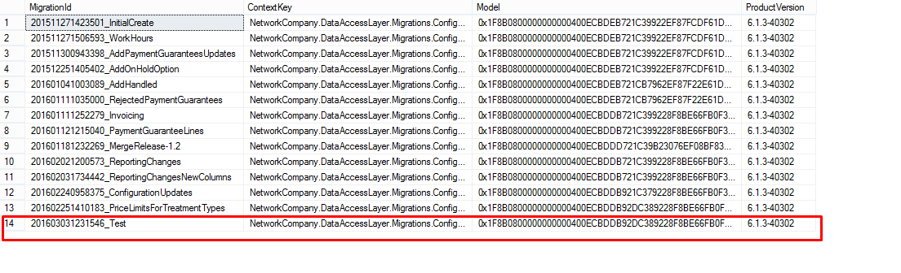
Update-Database
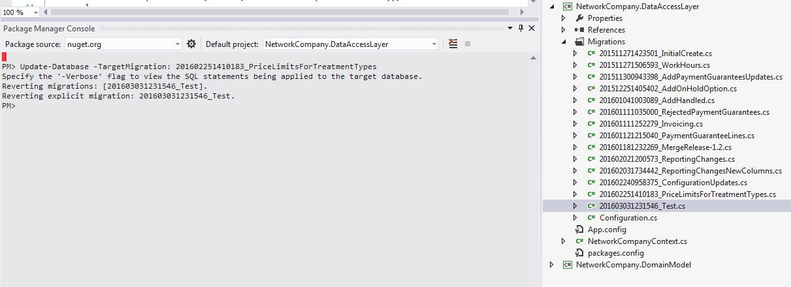
What has the experience taught us
- Migrations in team environments
- Migrate.exe
- Fluent API over Data Annotation
Migrations in team environments
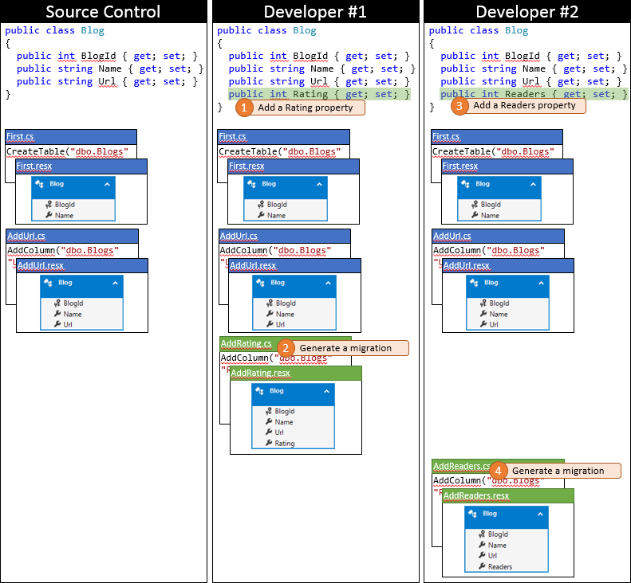
Migrations in team environments
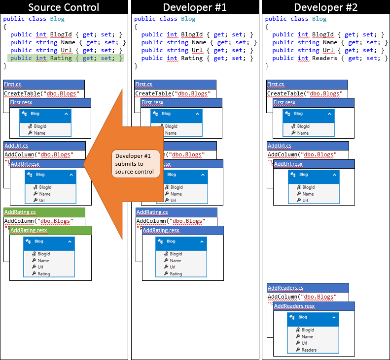
Migrations in team environments
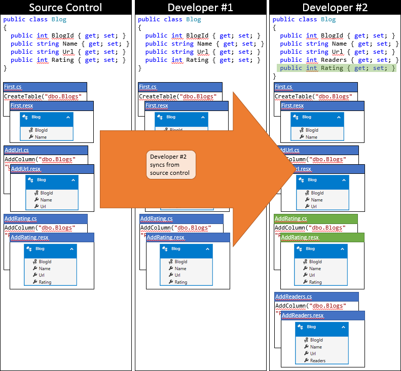
Migrations in team environments
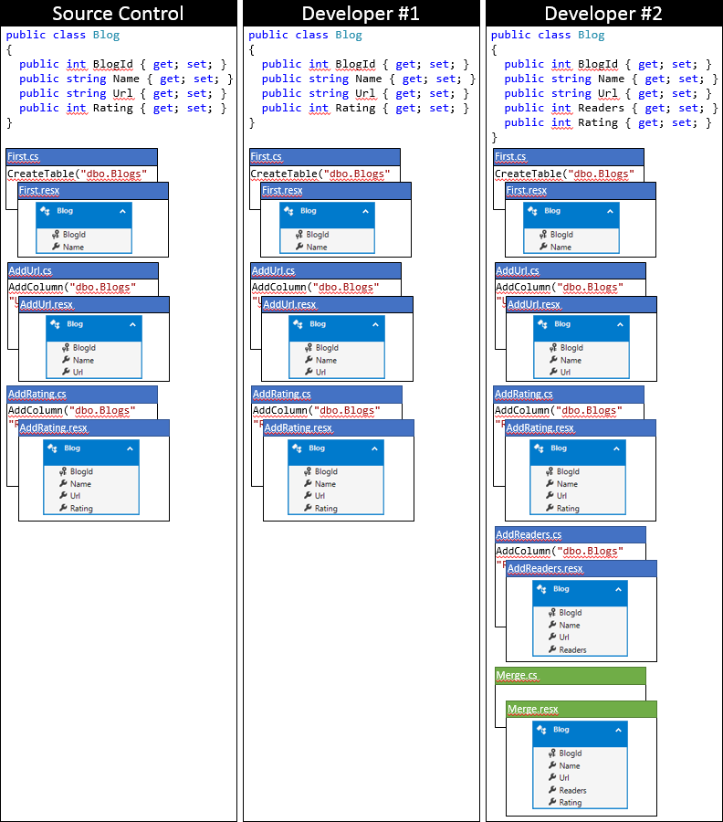
Migrate.exe
Migrate.exe MyDalApplication.dll /startupConfigurationFile="..\web.config"
Fluent API over Data Annotation
- The executor required property settings in EntityTypeConfiguration class